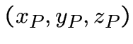
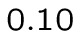
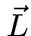

Compound objects
 We want to make a cube, and then be able to handle
We want to make a cube, and then be able to handle
this in a simple cube.
Basically, a cube consists of 6 faces, so either 6
parallelograms (squares). For these 6 faces
positioned correctly, it is necessary for 5 of them perform
rotations and one translation ( on the axis of us
gives the face of the left of our cube example ..).
Suppose we want to consider the cube as a
single entity, and apply it as a whole a translation
and rotations. This principle tends to blind us 6 pieces
that make up our plan object. However, describing our
3D scene by simply speaking of a cube in space with
its position and its characteristics, is significantly interressant.


115
Tips grouped
The 6 shots bits will be grouped into a object
cube type. These six bits, are objects themselves, have their
own translations and rotations. These transformations are
those that create the cube object in position
simple: a piece that does not move to the bottom of the cube, a second
identical but high end to the top of the cube ...
The cube object will itself its own transformations: they
. rammener used to the cube of its actual position to its simple position
Once singles position for the cube, each of 6 bits
plan, you have to put in the position of the single end plan.
We can then involve the intersecting function with
a plan.
116
Cube broken
![\ Includegraphics [height = 14cm] {} compose.eps](./rt9_files/img100.png) 117
117
Disturbances
For our objects, we have a set of characteristics
fixed physical: color, gloss, transparency ... and many others.
The form of our objects is designed mathematically flawless.
If we created objects a little less perfect?
Just for it to have simple functions that will
disrupt the pretty unique properties. According to the
coordinates of a point on the object (our point , for example),
these functions will significantly alter the normal in
the point (and to a less smooth surface)
transparency, color ...
To minimize the calculations in our duties are applied
in the single position of the object, so with the coordinates
of single , etc ..
118


Waves effect
See for example how to get a `` Wave World. ''
We'll just tweak the
normal of a point of a plan. Gloss features
and light create the visual effect.
Parallel wave axis :
, and . remain unchanged
perturbation functions make themselves part of
. characteristics of an object
It is for you to work your imagination to find
functions that produce unparalleled visuals !!
Some disturbances combined with appropriate textures
give the effect of wood, granite, velvet (...) very realistic.
119


Colors and textures
If our perturbation functions can modify a normal one
object at a given point, they can of course change the color.
Let's create a `` checkerboard '' on a plan:
it is tested whether and when , if these two conditions
are true or false at the same time, we choose a color,
if not, another.
Our color disturbance function will also be able to perform
simple calculations (Rule 3 ...) for starting
of coordinates in texture,
color and return the corresponding pixel in the texture.
It was our object textured, managing the problems of zoom
and `` textures that move. ''
120



Textures
![\ Includegraphics [height = 14cm] {} texture.eps](./rt9_files/img101.png) 121
121
Still disturbances
The system disturbances can be applied to almost
all parameters involved in the calculations
post-intersection. It is possible to change the
transparency or reflection based on a formula.
A texture can be used both as disturbance color
and transparency of disturbance. A drawing initially on
white background can be found on a piece of textured plane
but also allow the cut end of the plan is where
the white color is.
More delicate but still feasible, a disturbance of
the boundary of an object, depending on the point of intersection.
122
Disturbances ++
![\ Includegraphics [height = 14cm] {} perturb.eps](./rt9_files/img102.png) 123
123
Ambient light
So far, the unexposed portions of the object
light, so in the dark, were returned to the black screen.
This pattern is somewhat lacking in realism. The objects illuminated
re-themselves emit some light (diffuse light).
It would be unthinkable unfortunately to consider all
points of objects illuminated in turn as the spots more
low intensity.
We define floodlight which will be added
to all our points. Thus, an object completely in the shade
will be visible anyway.
As always, feel free to incorporate this factor to your
sauce. And why not make disturbance functions
of the ambient light ...
A mere possibility of not lower than
the brightness below for example.
124


Parallel light
So far we have used point light sources
(our spots). The light is emitted in all directions.
This specific aspect is not really consistent with what
can be observed in reality. It is possible to
create a parallel light source. It is not
located at precise coordinates, but it has
a vector indicant orientation.
Specifically, the vector (between the spot and the point )
to be parallel light away from the vector
orientation of the light .
Note: in this case, the shadow will
consider ALL the objects in front of the point
(thus for all ) where a normal spot, only
objects between and were interesting ( ).



125
Negative objects
This is to remove one object to another. It is a system
cutting a form from another form. The object
is usually closed negative.
There are two ways to achieve this effect:
The first is to respond `` untouched object '' if
the intersection point is inside the object
negative. This has the effect of leaving a hole in the shape
original.
The second makes a negative impression of the object, simulating
a distortion of the original shape. This is part
of the negative object that will serve as a modified surface on
the initial object.
126
Items - -
![\ Includegraphics [width = 20cm] {} negatif.eps](./rt9_files/img103.png) 127
127
Possible negative technique
There are of course several techniques to make this device
negative objects. One presented here tries to be as
close to the architecture of the raytracer view until now.
This is the first of two proposed solutions.
The negative object is initially regarded
as a normal object. It performs the intersection calculations
conventional manner.
It will however be necessary to retain all of the intersections
of a radius. Indeed, if our nearest intersection is
a negative object, you can not keep it. Must classify
the intersections and select the first matching
a vector object in overall negative object.
128
Ol - IGRAPH tek1 - January 22, 2002 - Converted by LaTeX2HTML
Original text
Contribute a better translation